⚠ AVISO DE SEGURIDAD ⚠
Este sistema contiene información clasificada como SENSIBLE y superior. El acceso no autorizado está prohibido y será sometido a investigación inmediata por la División de Seguridad Interna de NERV. Todo el personal debe verificar sus credenciales antes de proceder.
PERSONAL DE NERV
🔻 NIVEL 0 – AUTORIDAD SUPREMA (NO VISIBLE)
- SElEE: Consejo superior. Control ideológico y financiero. Directrices absolutas.
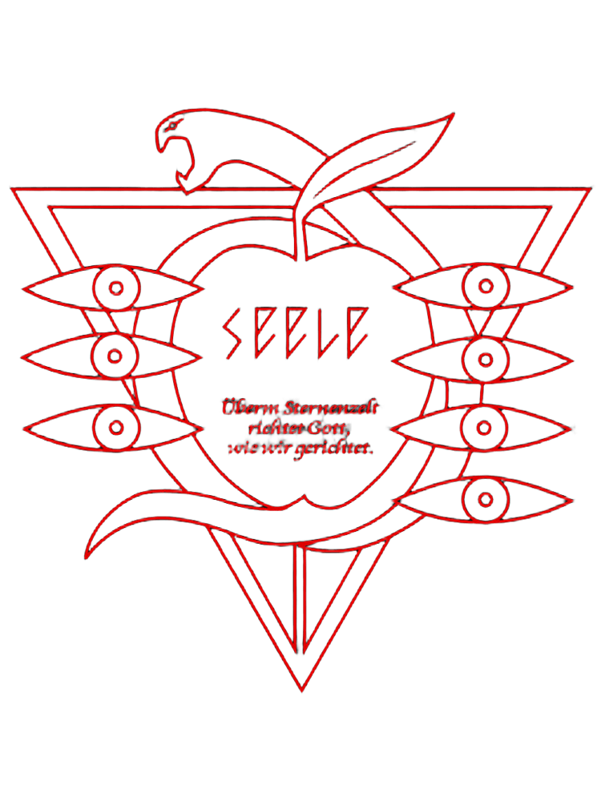
🔻 NIVEL 1 – COMANDO CENTRAL
- Gendo Ikari: Comandante en jefe.
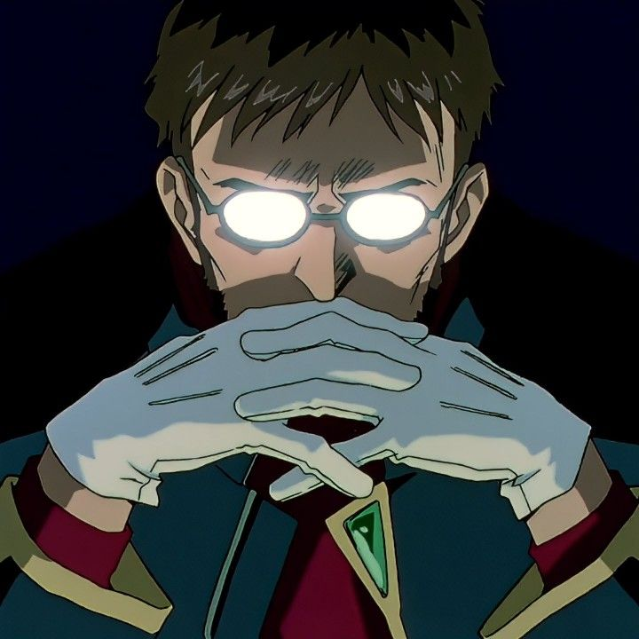
- Kozo Fuyutsuki: Subcomandante.
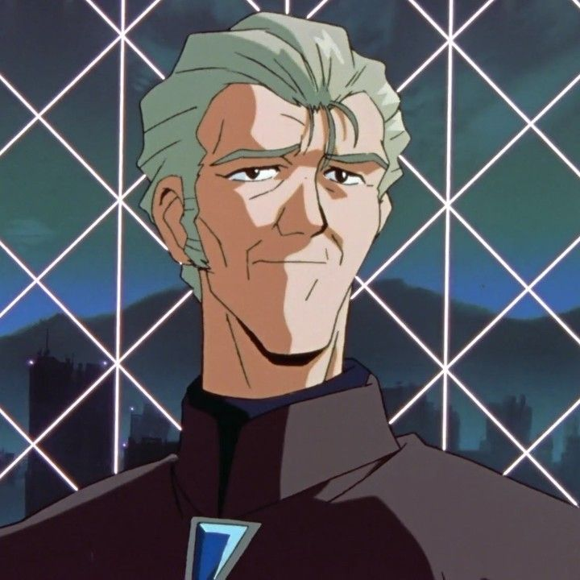
🔻 NIVEL 2 – OPERACIONES TÁCTICAS
- Misato Katsuragi: Jefa de operaciones.
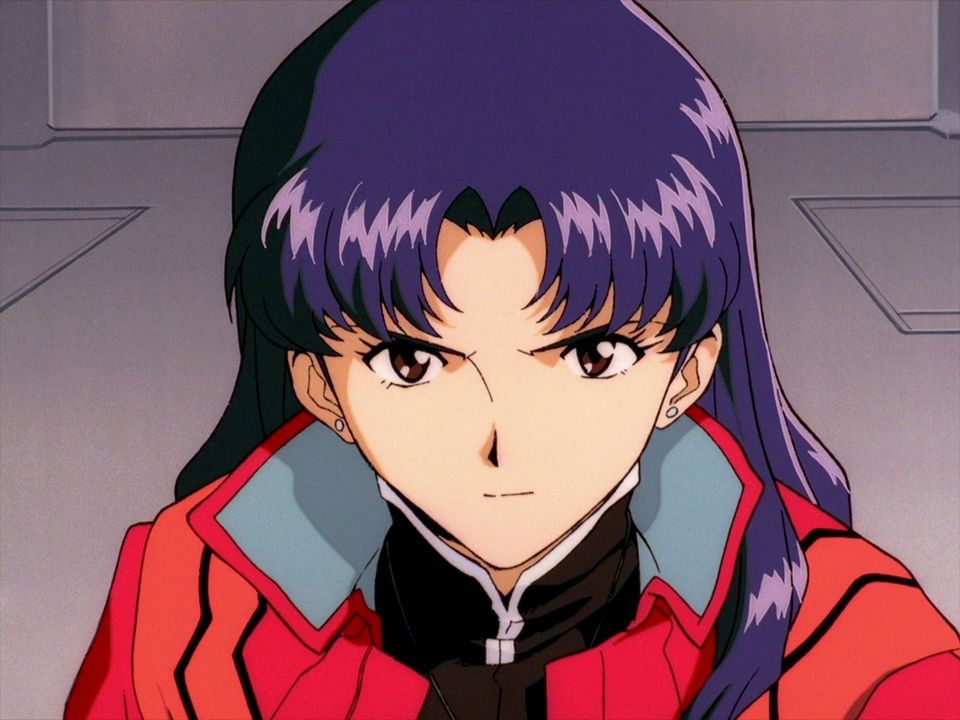
- Makoto Hyuga: Operador MAGI.
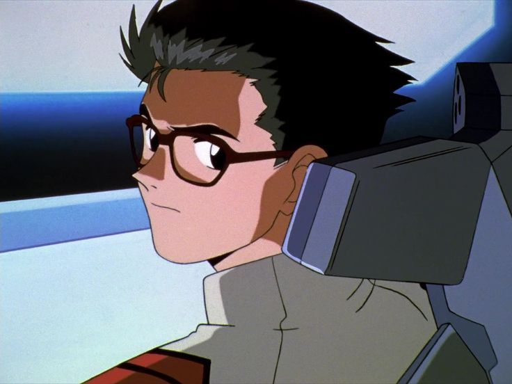
- Maya Ibuki: Analista técnica.
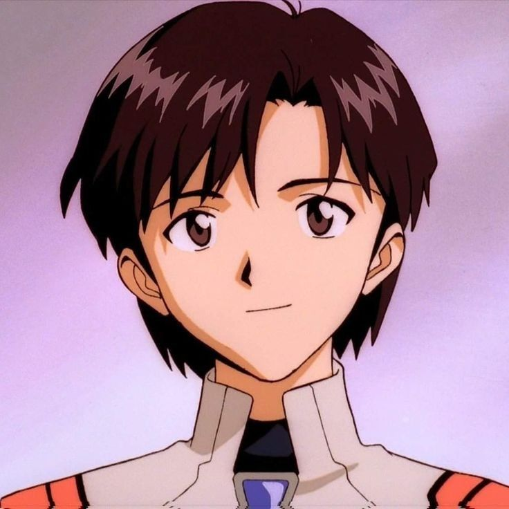
- Shigeru Aoba: Comunicaciones.
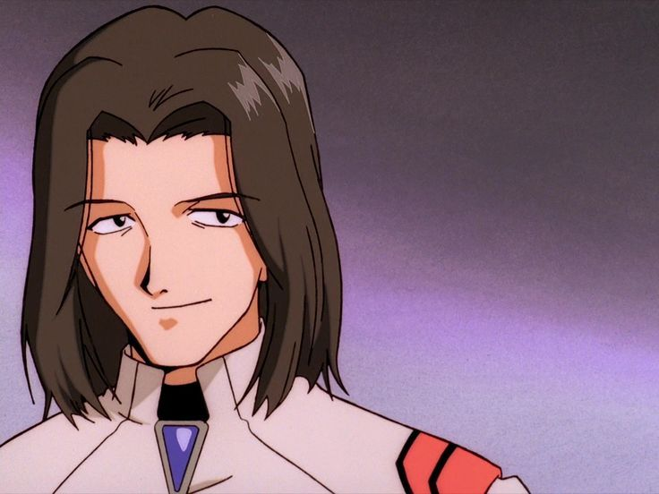
🔻 NIVEL 3 – DESARROLLO CIENTÍFICO
- Ritsko Akagi: Jefa científica.
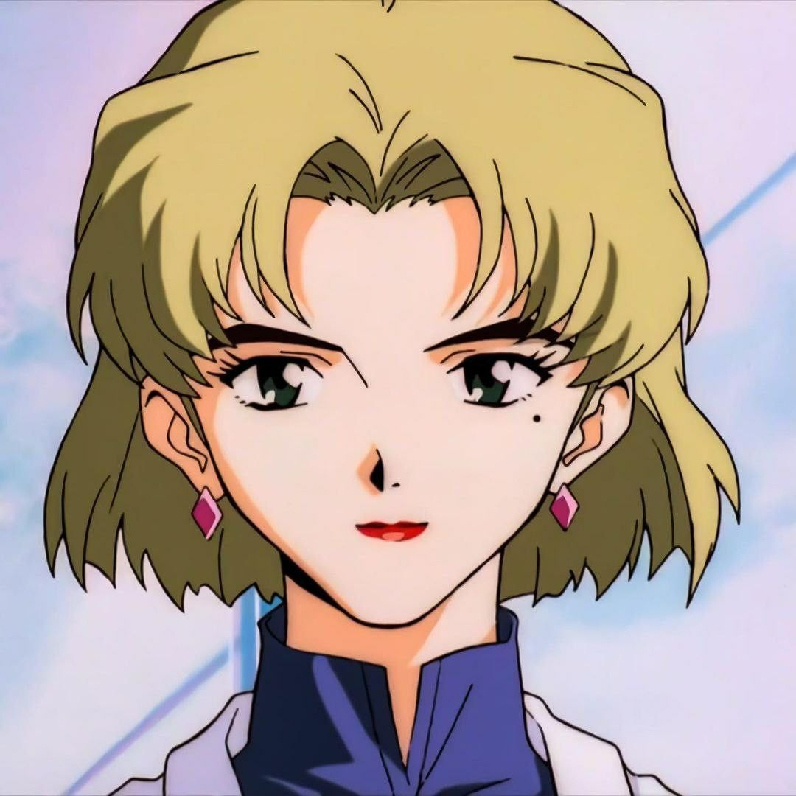
- Naoko Akagi: Archivo histórico.
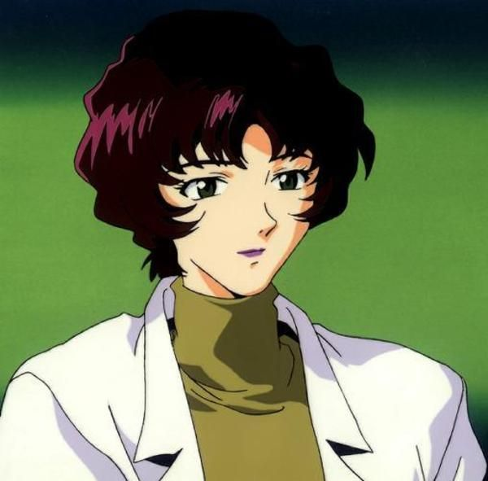
🔻 NIVEL 4 – ACTIVOS OPERATIVOS (PILOTOS)
- Shinji Ikari: Piloto del EVA-01.
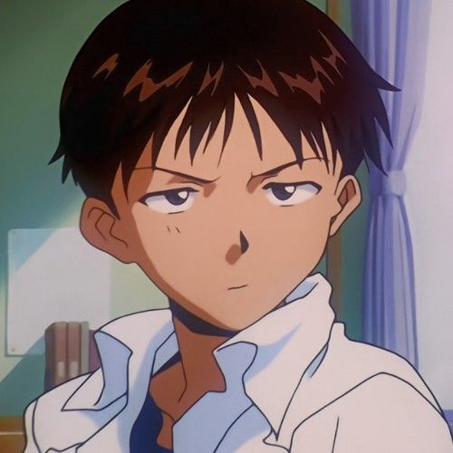
- Rei Anayami: Piloto del EVA-00.
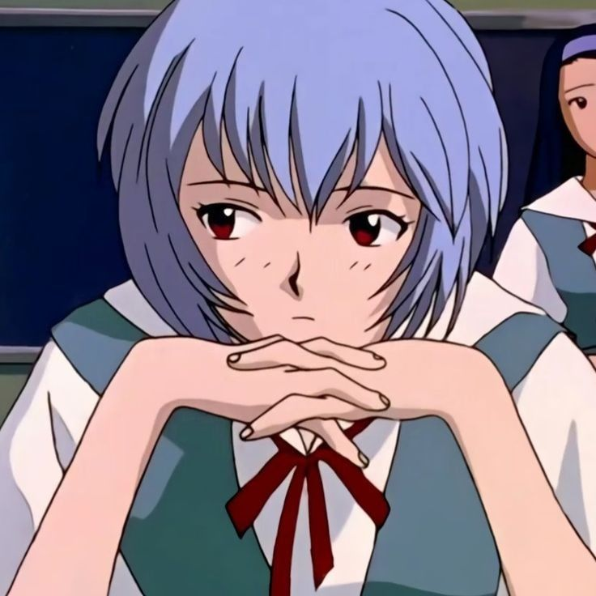
- Asuka Langley: Piloto del EVA-02.
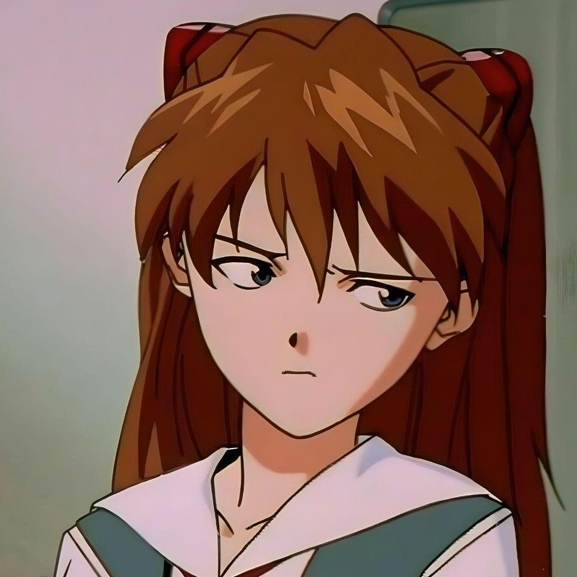
- Kaworu Nagisa: Piloto provisional.
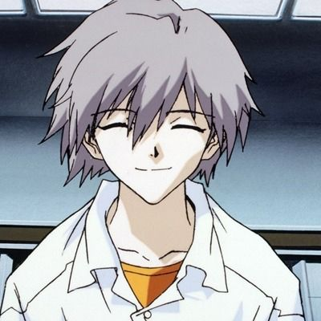
🔻 NIVEL 5 – PERSONAL DE APOYO
- Técnicos de mantenimiento EVA.
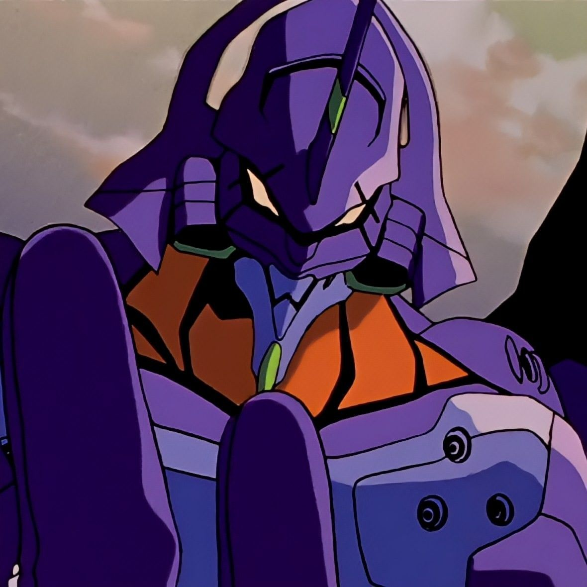
- Ingenieros estructurales.
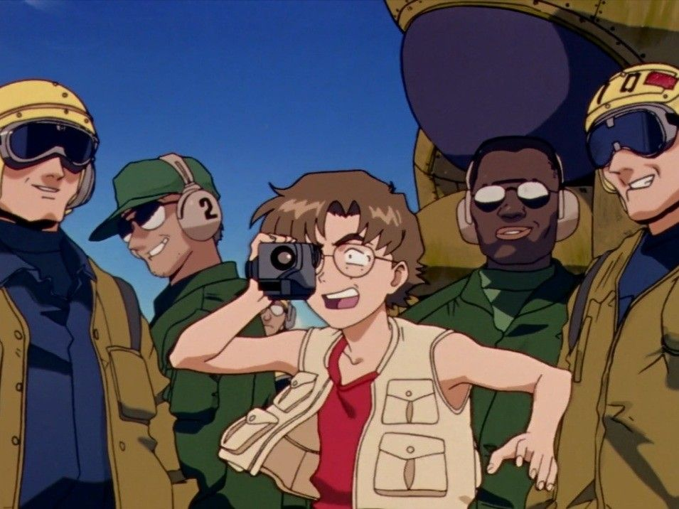
- Seguridad interna.
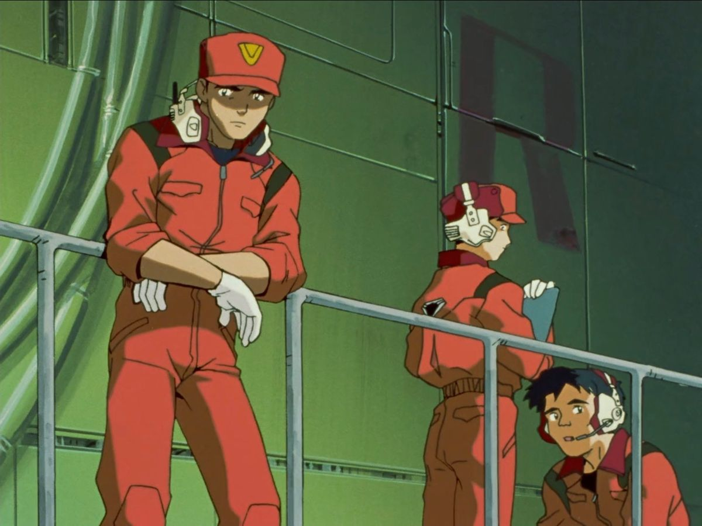
- Personal administrativo
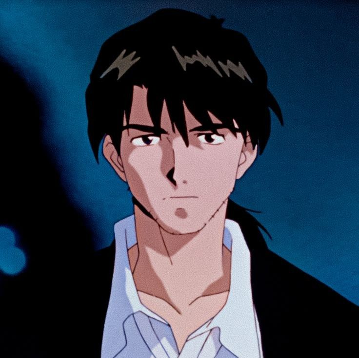